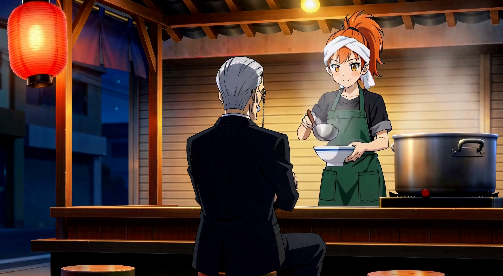
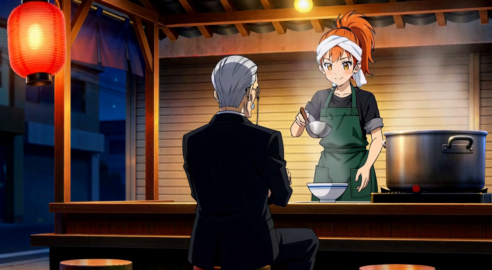

On the House
Storyboard review · 7.5 seconds · two held drawings, 3.75 seconds each.
Review the framing, prop continuity and timing. The planned action is Mio setting the bowl down, followed by Kuroe asking “For me?” and Mio smiling/nodding. Generated movement and dialogue follow your look at these boards.
This storyboard track is silent. The final brief has only Kuroe speaking, with no music.

C1 opening: bowl held LEFT; ladle RIGHT.
C2 opening: bowl on counter; LEFT clear; ladle RIGHT.Production notes and findings · Addenda and proposed next work · Media provenance